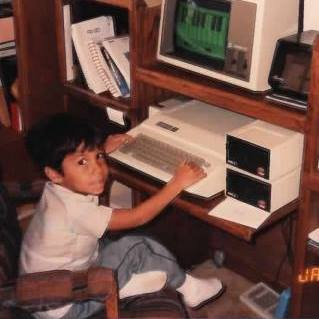

 I've always been a huge fan of technology, and that fascination was always supported by my family. When I was growing up my grandmother had an Apple IIe that I played games on whenever she wasn't using it for book keeping and word processing. When I was about six (1988) she took me to a class on putting a PC together and then let me build one, which was very exciting for a little kid like I was. If I remember right it was something like 20MHz processor with 4MB of RAM. Blazing speed!
When middle school came around, I was still tinkering around with hardware and was interested in programming but didn't know where to start. That's also when I discovered my talents in music and started spending a lot of time playing saxophone. Since then I've tried to juggle the two passions, but the technology has been dropped for extended periods a few times. In high school, I started playing guitar in my first band outside of the school, and also started learning C++ in AP Computer Science. I loved programming so much and had such a strong aptitude for it that I cruised through the whole syllabus in a matter of just two weeks. Our teacher was pretty incompetent, so I wound up doing a lot of the teaching for the rest of that course. I continued through CSII and an independent study period my senior year in which I tried my best to make a stick figure fighting game. I'm pretty sure it was before Stick Fighter.
Right out of high school I started community college, but promptly started a long hiatus to pursue a career in music. Rock and roll, baby. For the ten or so years that followed, the extent of my coding experience was building websites for bands I played in and my landscape business that funded my music habit. In 2013 I decided I would complete college and went back to ACC with intentions to complete a CS degree at UT, but instead I wound up landing some contract work in 2015 as a web developer at a local SaaS startup called Leading Reach. As it turned out, I wasn't really ready for the job and my contract didn't continue, and I've basically been utilizing my talents to scrape by since. I'm tired of scraping by. I'm ready for the future!